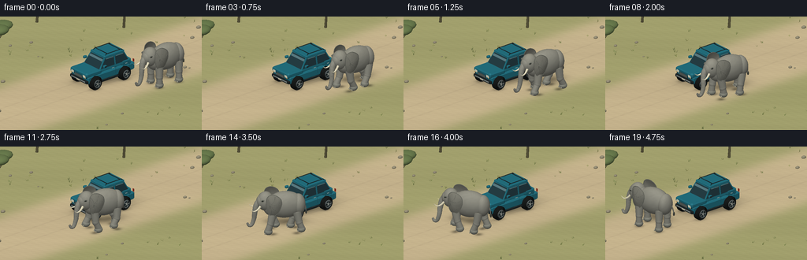
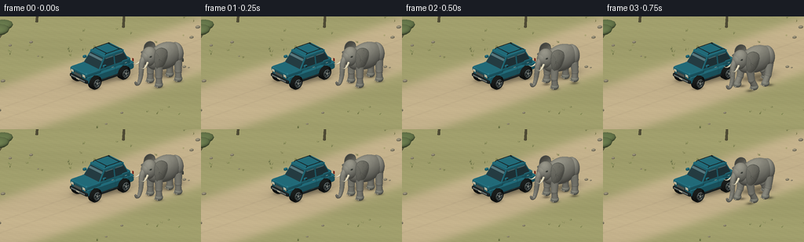

CODING AGENTS AS PIXEL WORLD MODELS
traex/GPT-6.1-Sol · dynamic_spatial_relationship_0067
点击播放 · 原生 RGB 像素
逐轮保存的候选
回放视频、检查图与代码变化。
每份候选均可单独播放。实际图片检查记录在下方工具轨迹中。
候选 01播放与检查图
点击播放 · 原生 RGB 像素


展开代码变化
--- 上一保存版本
+++ 本次保存版本
@@ -0,0 +1,456 @@
+"""Procedural RGB animation. Geometry and a small NumPy software rasterizer only."""
+from pathlib import Path
+import json, math
+import numpy as np
+from PIL import Image, ImageDraw
+import artifact_io
+
+ROOT=Path(__file__).resolve().parent
+SPEC=json.loads((ROOT/'task_spec.json').read_text())
+W,H=SPEC['width'],SPEC['height']
+SS=3
+RW,RH=W*SS,H*SS
+SCALE=19.7*SS
+TARGET=np.array([-1.05,-.55,1.08])
+CAM=np.array([-9.,-16.,9.])
+FORWARD=(TARGET-CAM);FORWARD/=np.linalg.norm(FORWARD)
+RIGHT=np.cross(FORWARD,[0,0,1.]);RIGHT/=np.linalg.norm(RIGHT)
+UP=np.cross(RIGHT,FORWARD)
+LIGHT=np.array([-.50,-.65,1.]);LIGHT/=np.linalg.norm(LIGHT)
+VIEW=-FORWARD
+
+
+def unit(a):
+ a=np.asarray(a,float)
+ return a/(np.linalg.norm(a,axis=-1,keepdims=True)+1e-12)
+
+def rotz(a):
+ c,s=np.cos(a),np.sin(a)
+ return np.array([[c,-s,0],[s,c,0],[0,0,1.]])
+
+def project(p):
+ q=p-TARGET
+ return np.column_stack((RW/2+q@RIGHT*SCALE,RH/2-q@UP*SCALE,q@FORWARD))
+
+class Mesh:
+ def __init__(self): self.parts=[]
+ def add(self,v,f,n,color,kind='matte'):
+ self.parts.append((np.asarray(v,float),np.asarray(f,np.int32),np.asarray(n,float),np.asarray(color,float),kind))
+ def transformed(self,R,p):
+ out=Mesh()
+ for v,f,n,c,k in self.parts: out.add(v@R.T+p,f,n@R.T,c,k)
+ return out
+ def extend(self,m):self.parts.extend(m.parts)
+
+# Surface primitives are created directly, not through a rendering library.
+def ellipsoid(m,c,r,color,rotation=None,nu=28,nv=18,kind='matte',skin=False):
+ us=np.arange(nu+1)*2*np.pi/nu
+ vs=np.linspace(0,np.pi,nv+1)
+ vv,uu=np.meshgrid(vs,us,indexing='ij')
+ q=np.stack((np.sin(vv)*np.cos(uu),np.sin(vv)*np.sin(uu),np.cos(vv)),axis=-1).reshape(-1,3)
+ r=np.asarray(r,float)
+ p=q*r
+ if skin:
+ # Very shallow coarse folds leave the silhouette smooth.
+ amp=.004*np.sin(uu.reshape(-1)*18+vv.reshape(-1)*6)*np.sin(vv.reshape(-1))
+ p +=q*amp[:,None]
+ n=unit(q/r)
+ if rotation is not None:p=p@rotation.T;n=n@rotation.T
+ p+=c
+ f=[]
+ for j in range(nv):
+ for i in range(nu):
+ a=j*(nu+1)+i;b=a+1;d=a+nu+1;e=d+1
+ f.extend(((a,d,b),(b,d,e)))
+ m.add(p,f,n,color,kind)
+
+def quad(m,verts,color,kind='matte'):
+ p=np.array(verts,float);n=unit(np.cross(p[1]-p[0],p[2]-p[0]))
+ m.add(p,[[0,1,2],[0,2,3]],np.tile(n,(4,1)),color,kind)
+
+def box(m,c,size,color,kind='matte'):
+ c=np.array(c);d=np.array(size)/2
+ v=np.array([[x,y,z] for x in [-1,1] for y in [-1,1] for z in [-1,1]])*d+c
+ for f in [[0,1,3,2],[4,6,7,5],[0,4,5,1],[2,3,7,6],[0,2,6,4],[1,5,7,3]]:
+ quad(m,v[f],color,kind)
+
+def rounded_box(m,c,size,bevel,color,kind='matte'):
+ # Three bevelled octagonal horizontal rings.
+ c=np.asarray(c);x,y,z=np.array(size)/2;b=bevel
+ xy=[(-x+b,-y), (x-b,-y),(x,-y+b),(x,y-b),(x-b,y),(-x+b,y),(-x,y-b),(-x,-y+b)]
+ rings=[]
+ for h,shrink in [(-z,b),(-z+b,0),(z-b,0),(z,b)]:
+ rings.append(np.array([[a-np.sign(a)*shrink,d-np.sign(d)*shrink,h] for a,d in xy])+c)
+ for j in range(3):
+ for i in range(8):quad(m,[rings[j][i],rings[j][(i+1)%8],rings[j+1][(i+1)%8],rings[j+1][i]],color,kind)
+ for ring,reverse in [(rings[0],True),(rings[-1],False)]:
+ cen=ring.mean(axis=0)
+ for i in range(8):
+ tri=[cen,ring[i],ring[(i+1)%8]]
+ if reverse:tri=tri[::-1]
+ n=unit(np.cross(tri[1]-tri[0],tri[2]-tri[0]))
+ m.add(tri,[[0,1,2]],np.tile(n,(3,1)),color,kind)
+
+def tube(m,points,radii,color,sides=14,kind='matte',folds=False):
+ p=np.asarray(points,float);rs=np.broadcast_to(radii,(len(p),))
+ tangent=unit(np.gradient(p,axis=0))
+ rings=[];ns=[]
+ for j,(c,t,r) in enumerate(zip(p,tangent,rs)):
+ ref=np.array([0,1.,0]) if abs(t[1])<.85 else np.array([1.,0,0])
+ u=unit(np.cross(t,ref));v=np.cross(t,u)
+ th=np.arange(sides)*2*np.pi/sides
+ n=np.cos(th)[:,None]*u+np.sin(th)[:,None]*v
+ rr=r*(1+.026*np.sin(j*2.6)) if folds else r
+ rings.append(c+n*rr);ns.append(n)
+ fs=[]
+ for j in range(len(p)-1):
+ for i in range(sides):
+ a=j*sides+i;b=j*sides+(i+1)%sides;d=a+sides;e=b+sides
+ fs.extend(((a,b,d),(b,e,d)))
+ verts=np.concatenate(rings);norms=np.concatenate(ns)
+ for j in [0,len(p)-1]:
+ start=len(verts);verts=np.vstack([verts,p[j]]);norms=np.vstack([norms,-tangent[j] if j==0 else tangent[j]])
+ for i in range(sides):fs.append((start,j*sides+i,j*sides+(i+1)%sides))
+ m.add(verts,fs,norms,color,kind)
+
+def curve(control,count=30):
+ p=np.asarray(control,float)
+ # Catmull-Rom interpolation, clamped end tangents.
+ out=[]
+ for t in np.linspace(0,len(p)-1,count):
+ j=min(int(t),len(p)-2);u=t-j
+ p0=p[max(j-1,0)];p1=p[j];p2=p[j+1];p3=p[min(j+2,len(p)-1)]
+ out.append(.5*((2*p1)+(-p0+p2)*u+(2*p0-5*p1+4*p2-p3)*u*u+(-p0+3*p1-3*p2+p3)*u*u*u))
+ return np.array(out)
+
+def cylinder(m,c,r,length,color,axis='y',nu=32,kind='matte'):
+ p=np.linspace(-length/2,length/2,3)
+ if axis=='y':pts=np.array([[c[0],c[1]+h,c[2]] for h in p])
+ elif axis=='x':pts=np.array([[c[0]+h,c[1],c[2]] for h in p])
+ else:pts=np.array([[c[0],c[1],c[2]+h] for h in p])
+ tube(m,pts,np.full(3,r),color,nu,kind)
+
+TEAL=(35,112,131);TRIM=(30,39,42);GLASS=(37,61,69);CHROME=(156,163,158)
+
+def make_car():
+ m=Mesh()
+ # Four visibly grounded wheels with circular tread, rims and spokes.
+ for x in [-1.40,1.02]:
+ for side in [-1,1]:
+ y=side*.86;z=.46
+ pts=np.array([[x,y+v,z] for v in [-.23,-.18,-.13,.13,.18,.23]])
+ tube(m,pts,[.34,.43,.465,.465,.43,.34],(26,29,29),36,'rubber')
+ for i in range(36):
+ a=2*np.pi*i/36
+ p=np.array([x+.462*np.cos(a),y,z+.462*np.sin(a)])
+ q=np.array([x+.464*np.cos(a+.038),y,z+.464*np.sin(a+.038)])
+ quad(m,[p+[0,-.13,0],q+[0,-.13,0],q+[0,.13,0],p+[0,.13,0]],(40,42,40))
+ outy=y+side*.236
+ cylinder(m,[x,outy,z],.272,.020,(102,111,114),'y',32,'metal')
+ cylinder(m,[x,outy+side*.013,z],.225,.012,(40,50,53),'y',30)
+ for a in np.arange(5)*2*np.pi/5:
+ p0=[x+.065*np.cos(a-.22),outy+side*.024,z+.065*np.sin(a-.22)]
+ p1=[x+.223*np.cos(a-.10),outy+side*.024,z+.223*np.sin(a-.10)]
+ p2=[x+.223*np.cos(a+.10),outy+side*.024,z+.223*np.sin(a+.10)]
+ p3=[x+.065*np.cos(a+.22),outy+side*.024,z+.065*np.sin(a+.22)]
+ quad(m,[p0,p1,p2,p3],(179,184,180),'metal')
+ cylinder(m,[x,outy+side*.032,z],.065,.025,CHROME,'y',18,'metal')
+ rounded_box(m,[-.02,0,.71],[3.93,1.69,.53],.08,TEAL,'paint')
+ rounded_box(m,[-1.45,0,1.07],[1.30,1.67,.32],.075,TEAL,'paint')
+ rounded_box(m,[1.28,0,1.12],[.78,1.68,.41],.065,TEAL,'paint')
+ # Trapezoidal cabin, with true sloping windscreen and separate windows.
+ v=np.array([[-.98,-.82,1.13],[-.98,.82,1.13],[1.55,.82,1.13],[1.55,-.82,1.13],[-.46,-.69,1.92],[-.46,.69,1.92],[1.15,.69,1.92],[1.15,-.69,1.92]])
+ for ids in [[0,1,5,4],[1,2,6,5],[2,3,7,6],[3,0,4,7],[4,5,6,7]]:quad(m,v[ids],TEAL,'paint')
+ quad(m,[[-.971,-.745,1.23],[-.971,.745,1.23],[-.501,.628,1.86],[-.501,-.628,1.86]],GLASS,'glass')
+ # Two bright, softly reflected bands in the windshield.
+ quad(m,[[-.647,-.650,1.665],[-.647,.650,1.665],[-.559,.629,1.783],[-.559,-.629,1.783]],(89,123,133),'glass')
+ for side in [-1,1]:
+ def sy(z):return side*(.823-(z-1.13)/.79*.13)+side*.007
+ for xa,xb,xt0,xt1 in [(-.88,.27,-.43,.27),(.38,1.43,.38,1.11)]:
+ quad(m,[[xa,sy(1.25),1.25],[xb,sy(1.25),1.25],[xt1,sy(1.83),1.83],[xt0,sy(1.83),1.83]],GLASS,'glass')
+ # reflected sky at top of side windows
+ quad(m,[[xt0+.025,sy(1.77)+side*.004,1.77],[xt1-.025,sy(1.77)+side*.004,1.77],[xt1-.04,sy(1.82)+side*.004,1.82],[xt0+.04,sy(1.82)+side*.004,1.82]],(101,137,145),'glass')
+ tube(m,[[-.95,side*.849,1.11],[1.48,side*.849,1.11]],[.018,.018],(27,81,95),8)
+ for x in [.33,1.47]:tube(m,[[x,side*.852,.62],[x,side*.852,1.1]],[.009,.009],(28,83,95),7)
+ for x in [.10,1.21]:rounded_box(m,[x,side*.866,1.10],[.18,.035,.038],.008,(160,172,169),'metal')
+ rounded_box(m,[-.70,side*1.0,1.45],[.26,.17,.16],.035,TEAL,'paint')
+ box(m,[-.70,side*1.086,1.455],[.18,.013,.095],(34,50,55),'glass')
+ tube(m,[[-.84,side*.86,.42],[1.40,side*.86,.42]],[.062,.062],TRIM,10)
+ # Nose: bumper, silver grille and large pale headlights make its front unambiguous.
+ rounded_box(m,[-2.012,0,.62],[.18,1.73,.22],.045,TRIM)
+ box(m,[-2.108,0,.64],[.018,1.39,.076],(143,154,155),'metal')
+ rounded_box(m,[-2.078,0,.91],[.048,.80,.255],.02,(24,39,42))
+ for z in [.84,.91,.98]:box(m,[-2.107,0,z],[.013,.74,.024],CHROME,'metal')
+ for y in [-.59,.59]:
+ rounded_box(m,[-2.063,y,1.005],[.05,.32,.23],.018,(36,54,58))
+ rounded_box(m,[-2.093,y,1.007],[.027,.278,.178],.012,(236,235,211),'glass')
+ box(m,[-2.112,y+.10*np.sign(y),.917],[.010,.064,.038],(217,150,52))
+ box(m,[-2.126,0,.62],[.010,.32,.092],(223,218,196))
+ for y in [-.70,.70]:box(m,[1.94,y,1.04],[.025,.145,.20],(152,48,34),'glass')
+ # Roof rails, subtly bevelled roof and hood panel edges.
+ rounded_box(m,[.34,0,1.948],[1.70,1.43,.10],.038,TEAL,'paint')
+ for y in [-.60,.60]:
+ tube(m,[[-.33,y,1.993],[-.25,y,2.072],[1.0,y,2.072],[1.1,y,1.993]],[.022]*4,TRIM,8)
+ for x in [-.16,.91]:tube(m,[[x,-.6,2.065],[x,.6,2.065]],[.022,.022],TRIM,8)
+ for y in [-.67,.67]:tube(m,[[-1.93,y,1.225],[-1.05,y,1.225]],[.006,.006],(27,90,106),6)
+ return m.transformed(rotz(.22),np.array([-.25,.66,0.]))
+
+SKIN=(139,140,133)
+
+def make_ear(m,side,phase):
+ outline=np.array([[-.34,.57],[-.12,.75],[.19,.73],[.52,.49],[.60,.14],[.51,-.23],[.31,-.59],[.02,-.72],[-.23,-.58],[-.36,-.24],[-.40,.13]])
+ # Smooth interpolated kidney-shaped silhouette.
+ pts=[]
+ for j in range(len(outline)):
+ a,b,c,d=[outline[k%len(outline)] for k in [j-1,j,j+1,j+2]]
+ for t in np.linspace(0,1,4,endpoint=False):pts.append(.5*(2*b+(-a+c)*t+(2*a-5*b+4*c-d)*t*t+(-a+3*b-3*c+d)*t*t*t))
+ pts=np.array(pts);nn=len(pts);v=[]
+ flap=.035*np.sin(phase*.7+side*.4)
+ for t in np.linspace(.0,1,7):
+ for x,z in pts*t:
+ v.append([-.83+x, side*(.65+.18*(1-t*t)+flap+x*.09),2.10+z])
+ v=np.array(v);fs=[]
+ for j in range(6):
+ for i in range(nn):
+ a=j*nn+i;b=j*nn+(i+1)%nn;d=a+nn;e=b+nn
+ fs.extend(((a,b,d),(b,e,d)))
+ n=np.zeros_like(v)
+ for a,b,c in fs:
+ q=np.cross(v[b]-v[a],v[c]-v[a]);n[a]+=q;n[b]+=q;n[c]+=q
+ n=unit(n)
+ if np.mean(n[:,1])*side<0:n=-n
+ m.add(v,fs,n,(126,127,120),'skin')
+ edge=np.column_stack((-.83+pts[:,0],side*(.65+flap+pts[:,0]*.09),2.10+pts[:,1]))
+ edge=np.vstack([edge,edge[0]])
+ tube(m,edge,.018,(114,117,111),7,'skin')
+ # Sparse radiating wrinkles on the ear, low-contrast and fine.
+ for j in [0,8,14,23,30,36]:
+ x,z=pts[j]
+ c=curve([[-1.03,side*(.843+flap),2.2],[-.85+x*.48,side*(.81+flap+x*.06),2.1+z*.47],[-.83+x*.88,side*(.70+flap+x*.08),2.1+z*.88]],12)
+ tube(m,c,.008,(113,116,110),5,'skin')
+
+def make_elephant(t,walking):
+ m=Mesh();phase=2*np.pi*.95*t
+ bob=.025*np.cos(phase*2)*walking
+ # Far limbs first; the z-buffer supplies exact occlusion.
+ for x0 in [-.78,.78]:
+ for side in [1,-1]:
+ ph=phase+(np.pi if (x0>0) ^ (side<0) else 0)
+ footx=x0+.34*np.cos(ph)*walking
+ lift=.16*max(0,np.sin(ph))*walking
+ zfoot=.15+lift
+ shoulder=np.array([x0,side*.44,1.50+bob])
+ knee=np.array([x0+.14*np.cos(ph-.45)*walking,side*.46,.78+lift*.30])
+ ankle=np.array([footx,side*.47,zfoot+.14])
+ tube(m,[shoulder,(shoulder+knee)/2,knee],[.27,.255,.22],SKIN,18,'skin')
+ ellipsoid(m,knee,[.235,.23,.29],SKIN,nu=20,nv=12,kind='skin')
+ tube(m,[knee,(knee+ankle)/2,ankle],[.219,.205,.225],SKIN,18,'skin')
+ ellipsoid(m,[footx,side*.47,zfoot+.055],[.27,.26,.22],(131,134,127),nu=24,nv=12,kind='skin')
+ for dy in [-.14,0,.14]:
+ ellipsoid(m,[footx-.237,side*.47+dy,zfoot-.030],[.035,.062,.052],(165,163,149),nu=10,nv=8)
+ ellipsoid(m,[.06,0,1.86+bob],[1.23,.675,.90],SKIN,nu=36,nv=24,kind='skin',skin=True)
+ ellipsoid(m,[-.75,0,1.84+bob],[.64,.58,.72],SKIN,nu=28,nv=18,kind='skin')
+ ellipsoid(m,[.92,0,1.83+bob],[.47,.58,.72],SKIN,nu=26,nv=18,kind='skin')
+ tail=curve([[1.19,.06,2.00+bob],[1.39,.07+.09*np.sin(phase),1.65],[1.44,.1+.15*np.sin(phase),1.26]],20)
+ tube(m,tail,np.linspace(.06,.024,len(tail)),(125,128,122),10,'skin')
+ ellipsoid(m,tail[-1]+[.015,0,-.065],[.055,.075,.14],(70,73,68),nu=14,nv=10)
+ make_ear(m,1,phase)
+ nod=.020*np.sin(phase)*walking
+ ellipsoid(m,[-1.20,0,2.15+bob+nod],[.55,.515,.65],SKIN,nu=34,nv=24,kind='skin',skin=True)
+ ellipsoid(m,[-1.48,-.015,2.15+bob+nod],[.33,.38,.43],SKIN,nu=24,nv=18,kind='skin')
+ make_ear(m,-1,phase)
+ sway=.12*np.sin(phase+.6)*walking
+ trunk=curve([[-1.54,-.015,2.24+bob+nod],[-1.78,-.02,1.92],[-1.89,-.055+sway*.35,1.48],[-1.94,-.06+sway,.96],[-2.09,-.06+sway,.53],[-2.28,-.065+sway,.48],[-2.38,-.06+sway,.65]],43)
+ tube(m,trunk,np.linspace(.225,.068,len(trunk)),SKIN,18,'skin',True)
+ # Trunk folds are small dark ridges around the lower, flexible trunk.
+ for j in range(8,37,3):
+ p=trunk[j];tangent=unit(trunk[min(j+1,42)]-trunk[j-1]);u=unit(np.cross(tangent,[0,1,0]));v=np.cross(tangent,u)
+ th=np.linspace(.3,3.7,13)
+ rr=np.linspace(.225,.068,43)[j]*1.01
+ arc=p+rr*(np.cos(th)[:,None]*u+np.sin(th)[:,None]*v)
+ tube(m,arc,.006,(120,122,116),5,'skin')
+ for side in [1,-1]:
+ tusk=curve([[-1.56,side*.31,1.94+bob],[-1.77,side*.38,1.72+bob],[-2.01,side*.43,1.64+bob],[-2.22,side*.45,1.77+bob]],23)
+ tube(m,tusk,np.linspace(.083,.007,len(tusk)),(224,219,195),14,'ivory')
+ # Lids surround a tiny dark eye with a stable pinpoint glint.
+ ellipsoid(m,[-1.44,side*.456,2.36+bob+nod],[.11,.038,.077],(111,115,109),nu=18,nv=12,kind='skin')
+ ellipsoid(m,[-1.457,side*.491,2.369+bob+nod],[.045,.025,.034],(21,26,23),nu=14,nv=10,kind='eye')
+ ellipsoid(m,[-1.468,side*.510,2.382+bob+nod],[.011,.009,.011],(215,215,194),nu=8,nv=6)
+ tube(m,[[-1.66,side*.31,1.93],[-1.50,side*.415,1.87],[-1.36,side*.44,1.88]],[.008]*3,(94,101,94),6,'skin')
+ return m
+
+# Stable, sparse savanna set dressing.
+def landscape():
+ rng=np.random.default_rng(432)
+ m=Mesh()
+ for _ in range(58):
+ x=rng.uniform(-10,10);y=rng.choice([rng.uniform(3.5,8),rng.uniform(-7,-4.0)])
+ if -6.5<x<4.8 and -3.6<y<2.7:continue
+ h=rng.uniform(.07,.22)
+ for k in range(rng.integers(3,6)):
+ a=rng.uniform(0,2*np.pi);width=.014
+ center=np.array([x+rng.normal(0,.045),y+rng.normal(0,.045),0])
+ v=[center+[-width,0,0],center+[width,0,0],center+[.09*np.cos(a),.09*np.sin(a),h]]
+ n=unit(np.cross(v[1]-v[0],v[2]-v[0]))
+ m.add(v,[[0,1,2]],np.tile(n,(3,1)),(125+rng.uniform(-10,10),137+rng.uniform(-12,12),79+rng.uniform(-10,10)))
+ for _ in range(22):
+ x=rng.uniform(-9,9);y=rng.uniform(-6,8)
+ if -6.4<x<4.7 and -3.25<y<2.2:continue
+ r=rng.uniform(.045,.18)
+ ellipsoid(m,[x,y,r*.33],[r,r*.75,r*.60],(151,145,124),nu=10,nv=6)
+ for x,y,h in [(-5.4,5.9,2.5),(4.6,7.2,2.8),(0.0,10.5,2.2)]:
+ tube(m,[[x,y,0],[x+.10,y,h*.61],[x-.15,y,h*.90]],[.09,.065,.034],(99,95,69),9)
+ for dx,dy in [(-.65,.1),(.65,.1),(.3,-.42)]:
+ tube(m,[[x+.05,y,h*.58],[x+dx,y+dy,h*.88]],[.04,.013],(100,95,69),7)
+ for dx,dy,dz,rr in [(-.58,.08,0,.8),(.44,.15,.08,.90),(0,-.4,.09,.77),(0,.42,.04,.76)]:
+ ellipsoid(m,[x+dx,y+dy,h+dz],[rr,.6,.31],(105,124,80),nu=16,nv=10)
+ return m
+
+CAR=make_car();SCENERY=landscape()
+
+# Analytic ground plane and soft contact/cast shadows in world coordinates.
+gy,gx=np.mgrid[:RH,:RW]
+sx=(gx+.5-RW/2)/SCALE;sy=-(gy+.5-RH/2)/SCALE
+plane=TARGET+sx[...,None]*RIGHT+sy[...,None]*UP
+plane=plane+(-plane[...,2]/FORWARD[2])[...,None]*FORWARD
+PX,PY=plane[...,0],plane[...,1]
+seednoise=np.random.default_rng(512).normal(0,1,(RH,RW))
+track_y=-(PX+.25)*np.sin(.22)+(PY-.66)*np.cos(.22)
+noise=(np.sin(PX*7.9+PY*12.3)*np.sin(PY*8.1-PX*4.5)*.55+np.sin(PX*2.7+PY*4.2)*.30+seednoise*.25)
+roadedge=1/(1+np.exp(np.clip(-(np.abs(track_y)-3.3)*3,-40,40)))
+base=np.zeros((RH,RW,3),float)
+for i,(sand,grass) in enumerate(zip([193,177,143],[157,157,110])):
+ base[...,i]=sand*(1-roadedge)+grass*roadedge+noise*(3.4 if i<2 else 2.8)
+# Broken worn wheel tracks and gentle ground variation.
+rut=np.exp(-((track_y-.71)/.065)**2)+np.exp(-((track_y+.71)/.065)**2)
+rut*=.6+.4*np.sin(PX*4.3)**2
+base-=rut[...,None]*np.array([8,8,6])
+base+=np.sin(PX*.51+PY*.81)[...,None]*np.array([2,2,1.5])
+
+
+def shadow_blob(alpha,c,r,strength):
+ x,y=c;rx,ry=r
+ q=((PX-x)/rx)**2+((PY-y)/ry)**2
+ a=strength*np.exp(-q*1.7)
+ alpha*=1-a
+
+
+def ground(elepos,eleR):
+ alpha=np.ones((RH,RW),float)
+ shadow_blob(alpha,[-.25+.42,.66+.45],[2.35,1.22],.33)
+ shadow_blob(alpha,[-.25,.66],[1.8,.8],.34)
+ for x in [-1.4,1.02]:
+ for side in [-1,1]:
+ p=rotz(.22)@np.array([x,side*.86,0])+[-.25,.66,0]
+ shadow_blob(alpha,p[:2],[.45,.30],.35)
+ # Project the elephant's body along the same sun direction used for shading.
+ for x,z,rx,ry,s in [(0,1.8,1.18,.69,.40),(-1.1,2.05,.57,.49,.23)]:
+ p=eleR@np.array([x,0,z])+elepos
+ c=p[:2]-LIGHT[:2]/LIGHT[2]*p[2]
+ # Rotate an elliptical shadow footprint correctly on the plane.
+ qx=(PX-c[0])*eleR[0,0]+(PY-c[1])*eleR[1,0]
+ qy=(PX-c[0])*eleR[0,1]+(PY-c[1])*eleR[1,1]
+ alpha*=1-s*np.exp(-1.4*((qx/rx)**2+(qy/ry)**2))
+ for x in [-.78,.78]:
+ for side in [-1,1]:
+ p=eleR@np.array([x,side*.46,0])+elepos
+ shadow_blob(alpha,p[:2],[.33,.27],.39)
+ rgb=base*alpha[...,None]
+ return np.clip(rgb,0,255).astype(np.float32)
+
+
+def vertex_colors(v,n,c,kind):
+ n=unit(n)
+ # Two-sided surface lighting for very thin ears and leaves.
+ toward=n@VIEW
+ n=np.where((toward<0)[:,None],-n,n)
+ diffuse=np.maximum(n@LIGHT,0)
+ sky=np.clip(n[:,2]*.5+.5,0,1)
+ shade=.45+.48*diffuse+.12*sky
+ col=np.broadcast_to(c,(len(v),3)).copy()*shade[:,None]
+ if kind=='skin':
+ noise=(np.sin(v[:,0]*31+v[:,2]*17)*np.sin(v[:,1]*43-v[:,2]*29)+.40*np.sin(v[:,0]*63+v[:,1]*39+v[:,2]*37))
+ col*=1+noise[:,None]*.017
+ # Low-contrast dusty highlights on upwards-facing surfaces.
+ col+=np.maximum(n[:,2],0)[:,None]*np.array([4.,3.,1.])
+ half=unit(LIGHT+VIEW)
+ power,strength={'paint':(35,29),'glass':(65,49),'metal':(46,55),'eye':(70,80),'ivory':(20,8),'rubber':(10,2)}.get(kind,(12,3))
+ spec=np.maximum(n@half,0)**power*strength
+ col+=spec[:,None]*np.array([1.,.97,.88])
+ if kind=='glass':
+ fresnel=(1-np.maximum(n@VIEW,0))**3
+ col+=fresnel[:,None]*np.array([24,35,38])
+ return np.clip(col,0,255)
+
+
+def render_mesh(rgb,zbuf,mesh):
+ for v,faces,n,c,kind in mesh.parts:
+ pp=project(v);colors=vertex_colors(v,n,c,kind)
+ # Bounding-box reject handles the set dressing outside the frame cheaply.
+ if pp[:,0].max()<0 or pp[:,0].min()>RW or pp[:,1].max()<0 or pp[:,1].min()>RH:continue
+ for face in faces:
+ p=pp[face]
+ x0,y0=p[0,:2];x1,y1=p[1,:2];x2,y2=p[2,:2]
+ den=(y1-y2)*(x0-x2)+(x2-x1)*(y0-y2)
+ if abs(den)<.018:continue
+ xmin=max(0,int(math.floor(min(x0,x1,x2))));xmax=min(RW-1,int(math.ceil(max(x0,x1,x2))))
+ ymin=max(0,int(math.floor(min(y0,y1,y2))));ymax=min(RH-1,int(math.ceil(max(y0,y1,y2))))
+ if xmin>xmax or ymin>ymax:continue
+ xx=np.arange(xmin,xmax+1)[None,:]+.5;yy=np.arange(ymin,ymax+1)[:,None]+.5
+ w0=((y1-y2)*(xx-x2)+(x2-x1)*(yy-y2))/den
+ w1=((y2-y0)*(xx-x2)+(x0-x2)*(yy-y2))/den
+ w2=1-w0-w1
+ dep=w0*p[0,2]+w1*p[1,2]+w2*p[2,2]
+ zs=zbuf[ymin:ymax+1,xmin:xmax+1]
+ mask=(w0>=-1e-6)&(w1>=-1e-6)&(w2>=-1e-6)&(dep<zs)
+ if not np.any(mask):continue
+ cs=colors[face]
+ out=w0[...,None]*cs[0]+w1[...,None]*cs[1]+w2[...,None]*cs[2]
+ rgb[ymin:ymax+1,xmin:xmax+1][mask]=out[mask]
+ zs[mask]=dep[mask]
+
+
+def smoothstep(s):return s*s*(3-2*s)
+
+def path(s):
+ x=3.05-7.70*s
+ y=-1.60-.4*np.sin(np.pi*s)+1.50*s**9
+ dx=-7.70;dy=-.4*np.pi*np.cos(np.pi*s)+13.5*s**8
+ angle=np.arctan2(-dy,-dx)
+ return np.array([x,y,0]),angle
+
+
+def main():
+ frames=[]
+ grounddepth=(plane-TARGET)@FORWARD
+ # Static geometry shading, reused without moving the camera or changing light.
+ staticrgb=np.zeros((RH,RW,3),np.float32);staticz=np.full((RH,RW),np.inf,np.float32)
+ render_mesh(staticrgb,staticz,SCENERY)
+ render_mesh(staticrgb,staticz,CAR)
+ staticmask=np.isfinite(staticz)
+ for i in range(SPEC['frames']):
+ t=i/SPEC['fps']
+ # Small opening/closing holds preserve both requested relationships.
+ raw=np.clip((t-.25)/4.15,0,1)
+ s=raw # constant forward speed, with smoothly curved displacement
+ pos,yaw=path(s)
+ R=rotz(yaw)
+ moving=float(0<raw<1)
+ # Ease limb motion into and out of the walk rather than popping poses.
+ moving*=min(1,max(0,(t-.25)/.35),max(0,(4.4-t)/.35))
+ elephant=make_elephant(t-.25,moving).transformed(R,pos)
+ rgb=ground(pos,R)
+ z=grounddepth.astype(np.float32).copy()
+ visible=staticmask&(staticz<z)
+ rgb[visible]=staticrgb[visible];z[visible]=staticz[visible]
+ render_mesh(rgb,z,elephant)
+ # Gentle warm film grade and proper supersampling.
+ rgb=np.clip(rgb*np.array([1.018,1.007,.980]),0,255).astype(np.uint8)
+ im=Image.fromarray(rgb).resize((W,H),Image.Resampling.LANCZOS)
+ frames.append(np.array(im))
+ print(f'rendered frame {i+1}/{SPEC["frames"]}',flush=True)
+ frames=np.stack(frames).astype(np.uint8)
+ artifact_io.save(frames,ROOT)
+ print('Saved required RGB animation artifacts.',flush=True)
+
+if __name__=='__main__':main()
可观测工具轨迹
实际执行的命令与返回图片。
命令 1exit 0
/bin/bash -lc 'ls -la && cat prompt.txt && cat GENERATION_RULES.md && cat task_spec.json'
命令 2exit 0
/bin/bash -lc "cat artifact_io.py && python - <<'PY' import importlib.util for m in ['numpy','PIL','scipy']: print(m, bool(importlib.util.find_spec(m))) PY"
命令 3exit 0
/bin/bash -lc "python - <<'PY' import importlib.util for m in ['numba','cv2']: print(m, bool(importlib.util.find_spec(m))) PY"
命令 4exit 0
/bin/bash -lc "python - <<'PY' import numpy as np T=np.array([-1.05,-.3,1.1]);E=np.array([-9.,-15.,9.]);f=(T-E);f/=np.linalg.norm(f);r=np.cross(f,[0,0,1]);r/=np.linalg.norm(r);u=np.cross(r,f) for p in [[-.4,.4,0],[-2.4,.4,0],[1.6,.4,0],[3,-.45,1.6],[-4,.1,1.6],[-6.3,.1,.65],[4.3,-.45,1.8]]: v=np.array(p)-T;print(p, np.round([128+v@r*20,72-v@u*20],1)) print(f,r,u) PY"
命令 5exit 0
/bin/bash -lc "cat > generate.py <<'PY'
\"\"\"Procedural RGB animation. Geometry and a small NumPy software rasterizer only.\"\"\"
from pathlib import Path
import json, math
import numpy as np
from PIL import Image, ImageDraw
import artifact_io
ROOT=Path(__file__).resolve().parent
SPEC=json.loads((ROOT/'task_spec.json').read_text())
W,H=SPEC['width'],SPEC['height']
SS=3
RW,RH=W*SS,H*SS
SCALE=19.7*SS
TARGET=np.array([-1.05,-.55,1.08])
CAM=np.array([-9.,-16.,9.])
FORWARD=(TARGET-CAM);FORWARD/=np.linalg.norm(FORWARD)
RIGHT=np.cross(FORWARD,[0,0,1.]);RIGHT/=np.linalg.norm(RIGHT)
UP=np.cross(RIGHT,FORWARD)
LIGHT=np.array([-.50,-.65,1.]);LIGHT/=np.linalg.norm(LIGHT)
VIEW=-FORWARD
def unit(a):
a=np.asarray(a,float)
return a/(np.linalg.norm(a,axis=-1,keepdims=True)+1e-12)
def rotz(a):
c,s=np.cos(a),np.sin(a)
return np.array([[c,-s,0],[s,c,0],[0,0,1.]])
def project(p):
q=p-TARGET
return np.column_stack((RW/2+q@RIGHT*SCALE,RH/2-q@UP*SCALE,q@FORWARD))
class Mesh:
def __init__(self): self.parts=[]
def add(self,v,f,n,color,kind='matte'):
self.parts.append((np.asarray(v,float),np.asarray(f,np.int32),np.asarray(n,float),np.asarray(color,float),kind))
def transformed(self,R,p):
out=Mesh()
for v,f,n,c,k in self.parts: out.add(v@R.T+p,f,n@R.T,c,k)
return out
def extend(self,m):self.parts.extend(m.parts)
# Surface primitives are created directly, not through a rendering library.
def ellipsoid(m,c,r,color,rotation=None,nu=28,nv=18,kind='matte',skin=False):
us=np.arange(nu+1)*2*np.pi/nu
vs=np.linspace(0,np.pi,nv+1)
vv,uu=np.meshgrid(vs,us,indexing='ij')
q=np.stack((np.sin(vv)*np.cos(uu),np.sin(vv)*np.sin(uu),np.cos(vv)),axis=-1).reshape(-1,3)
r=np.asarray(r,float)
p=q*r
if skin:
# Very shallow coarse folds leave the silhouette smooth.
amp=.004*np.sin(uu.reshape(-1)*18+vv.reshape(-1)*6)*np.sin(vv.reshape(-1))
p +=q*amp[:,None]
n=unit(q/r)
if rotation is not None:p=p@rotation.T;n=n@rotation.T
p+=c
f=[]
for j in range(nv):
for i in range(nu):
a=j*(nu+1)+i;b=a+1;d=a+nu+1;e=d+1
f.extend(((a,d,b),(b,d,e)))
m.add(p,f,n,color,kind)
def quad(m,verts,color,kind='matte'):
p=np.array(verts,float);n=unit(np.cross(p[1]-p[0],p[2]-p[0]))
m.add(p,[[0,1,2],[0,2,3]],np.tile(n,(4,1)),color,kind)
def box(m,c,size,color,kind='matte'):
c=np.array(c);d=np.array(size)/2
v=np.array([[x,y,z] for x in [-1,1] for y in [-1,1] for z in [-1,1]])*d+c
for f in [[0,1,3,2],[4,6,7,5],[0,4,5,1],[2,3,7,6],[0,2,6,4],[1,5,7,3]]:
quad(m,v[f],color,kind)
def rounded_box(m,c,size,bevel,color,kind='matte'):
# Three bevelled octagonal horizontal rings.
c=np.asarray(c);x,y,z=np.array(size)/2;b=bevel
xy=[(-x+b,-y), (x-b,-y),(x,-y+b),(x,y-b),(x-b,y),(-x+b,y),(-x,y-b),(-x,-y+b)]
rings=[]
for h,shrink in [(-z,b),(-z+b,0),(z-b,0),(z,b)]:
rings.append(np.array([[a-np.sign(a)*shrink,d-np.sign(d)*shrink,h] for a,d in xy])+c)
for j in range(3):
for i in range(8):quad(m,[rings[j][i],rings[j][(i+1)%8],rings[j+1][(i+1)%8],rings[j+1][i]],color,kind)
for ring,reverse in [(rings[0],True),(rings[-1],False)]:
cen=ring.mean(axis=0)
for i in range(8):
tri=[cen,ring[i],ring[(i+1)%8]]
if reverse:tri=tri[::-1]
n=unit(np.cross(tri[1]-tri[0],tri[2]-tri[0]))
m.add(tri,[[0,1,2]],np.tile(n,(3,1)),color,kind)
def tube(m,points,radii,color,sides=14,kind='matte',folds=False):
p=np.asarray(points,float);rs=np.broadcast_to(radii,(len(p),))
tangent=unit(np.gradient(p,axis=0))
rings=[];ns=[]
for j,(c,t,r) in enumerate(zip(p,tangent,rs)):
ref=np.array([0,1.,0]) if abs(t[1])<.85 else np.array([1.,0,0])
u=unit(np.cross(t,ref));v=np.cross(t,u)
th=np.arange(sides)*2*np.pi/sides
n=np.cos(th)[:,None]*u+np.sin(th)[:,None]*v
rr=r*(1+.026*np.sin(j*2.6)) if folds else r
rings.append(c+n*rr);ns.append(n)
fs=[]
for j in range(len(p)-1):
for i in range(sides):
a=j*sides+i;b=j*sides+(i+1)%sides;d=a+sides;e=b+sides
fs.extend(((a,b,d),(b,e,d)))
verts=np.concatenate(rings);norms=np.concatenate(ns)
for j in [0,len(p)-1]:
start=len(verts);verts=np.vstack([verts,p[j]]);norms=np.vstack([norms,-tangent[j] if j==0 else tangent[j]])
for i in range(sides):fs.append((start,j*sides+i,j*sides+(i+1)%sides))
m.add(verts,fs,norms,color,kind)
def curve(control,count=30):
p=np.asarray(control,float)
# Catmull-Rom interpolation, clamped end tangents.
out=[]
for t in np.linspace(0,len(p)-1,count):
j=min(int(t),len(p)-2);u=t-j
p0=p[max(j-1,0)];p1=p[j];p2=p[j+1];p3=p[min(j+2,len(p)-1)]
out.append(.5*((2*p1)+(-p0+p2)*u+(2*p0-5*p1+4*p2-p3)*u*u+(-p0+3*p1-3*p2+p3)*u*u*u))
return np.array(out)
def cylinder(m,c,r,length,color,axis='y',nu=32,kind='matte'):
p=np.linspace(-length/2,length/2,3)
if axis=='y':pts=np.array([[c[0],c[1]+h,c[2]] for h in p])
elif axis=='x':pts=np.array([[c[0]+h,c[1],c[2]] for h in p])
else:pts=np.array([[c[0],c[1],c[2]+h] for h in p])
tube(m,pts,np.full(3,r),color,nu,kind)
TEAL=(35,112,131);TRIM=(30,39,42);GLASS=(37,61,69);CHROME=(156,163,158)
def make_car():
m=Mesh()
# Four visibly grounded wheels with circular tread, rims and spokes.
for x in [-1.40,1.02]:
for side in [-1,1]:
y=side*.86;z=.46
pts=np.array([[x,y+v,z] for v in [-.23,-.18,-.13,.13,.18,.23]])
tube(m,pts,[.34,.43,.465,.465,.43,.34],(26,29,29),36,'rubber')
for i in range(36):
a=2*np.pi*i/36
p=np.array([x+.462*np.cos(a),y,z+.462*np.sin(a)])
q=np.array([x+.464*np.cos(a+.038),y,z+.464*np.sin(a+.038)])
quad(m,[p+[0,-.13,0],q+[0,-.13,0],q+[0,.13,0],p+[0,.13,0]],(40,42,40))
outy=y+side*.236
cylinder(m,[x,outy,z],.272,.020,(102,111,114),'y',32,'metal')
cylinder(m,[x,outy+side*.013,z],.225,.012,(40,50,53),'y',30)
for a in np.arange(5)*2*np.pi/5:
p0=[x+.065*np.cos(a-.22),outy+side*.024,z+.065*np.sin(a-.22)]
p1=[x+.223*np.cos(a-.10),outy+side*.024,z+.223*np.sin(a-.10)]
p2=[x+.223*np.cos(a+.10),outy+side*.024,z+.223*np.sin(a+.10)]
p3=[x+.065*np.cos(a+.22),outy+side*.024,z+.065*np.sin(a+.22)]
quad(m,[p0,p1,p2,p3],(179,184,180),'metal')
cylinder(m,[x,outy+side*.032,z],.065,.025,CHROME,'y',18,'metal')
rounded_box(m,[-.02,0,.71],[3.93,1.69,.53],.08,TEAL,'paint')
rounded_box(m,[-1.45,0,1.07],[1.30,1.67,.32],.075,TEAL,'paint')
rounded_box(m,[1.28,0,1.12],[.78,1.68,.41],.065,TEAL,'paint')
# Trapezoidal cabin, with true sloping windscreen and separate windows.
v=np.array([[-.98,-.82,1.13],[-.98,.82,1.13],[1.55,.82,1.13],[1.55,-.82,1.13],[-.46,-.69,1.92],[-.46,.69,1.92],[1.15,.69,1.92],[1.15,-.69,1.92]])
for ids in [[0,1,5,4],[1,2,6,5],[2,3,7,6],[3,0,4,7],[4,5,6,7]]:quad(m,v[ids],TEAL,'paint')
quad(m,[[-.971,-.745,1.23],[-.971,.745,1.23],[-.501,.628,1.86],[-.501,-.628,1.86]],GLASS,'glass')
# Two bright, softly reflected bands in the windshield.
quad(m,[[-.647,-.650,1.665],[-.647,.650,1.665],[-.559,.629,1.783],[-.559,-.629,1.783]],(89,123,133),'glass')
for side in [-1,1]:
def sy(z):return side*(.823-(z-1.13)/.79*.13)+side*.007
for xa,xb,xt0,xt1 in [(-.88,.27,-.43,.27),(.38,1.43,.38,1.11)]:
quad(m,[[xa,sy(1.25),1.25],[xb,sy(1.25),1.25],[xt1,sy(1.83),1.83],[xt0,sy(1.83),1.83]],GLASS,'glass')
# reflected sky at top of side windows
quad(m,[[xt0+.025,sy(1.77)+side*.004,1.77],[xt1-.025,sy(1.77)+side*.004,1.77],[xt1-.04,sy(1.82)+side*.004,1.82],[xt0+.04,sy(1.82)+side*.004,1.82]],(101,137,145),'glass')
tube(m,[[-.95,side*.849,1.11],[1.48,side*.849,1.11]],[.018,.018],(27,81,95),8)
for x in [.33,1.47]:tube(m,[[x,side*.852,.62],[x,side*.852,1.1]],[.009,.009],(28,83,95),7)
for x in [.10,1.21]:rounded_box(m,[x,side*.866,1.10],[.18,.035,.038],.008,(160,172,169),'metal')
rounded_box(m,[-.70,side*1.0,1.45],[.26,.17,.16],.035,TEAL,'paint')
box(m,[-.70,side*1.086,1.455],[.18,.013,.095],(34,50,55),'glass')
tube(m,[[-.84,side*.86,.42],[1.40,side*.86,.42]],[.062,.062],TRIM,10)
# Nose: bumper, silver grille and large pale headlights make its front unambiguous.
rounded_box(m,[-2.012,0,.62],[.18,1.73,.22],.045,TRIM)
box(m,[-2.108,0,.64],[.018,1.39,.076],(143,154,155),'metal')
rounded_box(m,[-2.078,0,.91],[.048,.80,.255],.02,(24,39,42))
for z in [.84,.91,.98]:box(m,[-2.107,0,z],[.013,.74,.024],CHROME,'metal')
for y in [-.59,.59]:
rounded_box(m,[-2.063,y,1.005],[.05,.32,.23],.018,(36,54,58))
rounded_box(m,[-2.093,y,1.007],[.027,.278,.178],.012,(236,235,211),'glass')
box(m,[-2.112,y+.10*np.sign(y),.917],[.010,.064,.038],(217,150,52))
box(m,[-2.126,0,.62],[.010,.32,.092],(223,218,196))
for y in [-.70,.70]:box(m,[1.94,y,1.04],[.025,.145,.20],(152,48,34),'glass')
# Roof rails, subtly bevelled roof and hood panel edges.
rounded_box(m,[.34,0,1.948],[1.70,1.43,.10],.038,TEAL,'paint')
for y in [-.60,.60]:
tube(m,[[-.33,y,1.993],[-.25,y,2.072],[1.0,y,2.072],[1.1,y,1.993]],[.022]*4,TRIM,8)
for x in [-.16,.91]:tube(m,[[x,-.6,2.065],[x,.6,2.065]],[.022,.022],TRIM,8)
for y in [-.67,.67]:tube(m,[[-1.93,y,1.225],[-1.05,y,1.225]],[.006,.006],(27,90,106),6)
return m.transformed(rotz(.22),np.array([-.25,.66,0.]))
SKIN=(139,140,133)
def make_ear(m,side,phase):
outline=np.array([[-.34,.57],[-.12,.75],[.19,.73],[.52,.49],[.60,.14],[.51,-.23],[.31,-.59],[.02,-.72],[-.23,-.58],[-.36,-.24],[-.40,.13]])
# Smooth interpolated kidney-shaped silhouette.
pts=[]
for j in range(len(outline)):
a,b,c,d=[outline[k%len(outline)] for k in [j-1,j,j+1,j+2]]
for t in np.linspace(0,1,4,endpoint=False):pts.append(.5*(2*b+(-a+c)*t+(2*a-5*b+4*c-d)*t*t+(-a+3*b-3*c+d)*t*t*t))
pts=np.array(pts);nn=len(pts);v=[]
flap=.035*np.sin(phase*.7+side*.4)
for t in np.linspace(.0,1,7):
for x,z in pts*t:
v.append([-.83+x, side*(.65+.18*(1-t*t)+flap+x*.09),2.10+z])
v=np.array(v);fs=[]
for j in range(6):
for i in range(nn):
a=j*nn+i;b=j*nn+(i+1)%nn;d=a+nn;e=b+nn
fs.extend(((a,b,d),(b,e,d)))
n=np.zeros_like(v)
for a,b,c in fs:
q=np.cross(v[b]-v[a],v[c]-v[a]);n[a]+=q;n[b]+=q;n[c]+=q
n=unit(n)
if np.mean(n[:,1])*side<0:n=-n
m.add(v,fs,n,(126,127,120),'skin')
edge=np.column_stack((-.83+pts[:,0],side*(.65+flap+pts[:,0]*.09),2.10+pts[:,1]))
edge=np.vstack([edge,edge[0]])
tube(m,edge,.018,(114,117,111),7,'skin')
# Sparse radiating wrinkles on the ear, low-contrast and fine.
for j in [0,8,14,23,30,36]:
x,z=pts[j]
c=curve([[-1.03,side*(.843+flap),2.2],[-.85+x*.48,side*(.81+flap+x*.06),2.1+z*.47],[-.83+x*.88,side*(.70+flap+x*.08),2.1+z*.88]],12)
tube(m,c,.008,(113,116,110),5,'skin')
def make_elephant(t,walking):
m=Mesh();phase=2*np.pi*.95*t
bob=.025*np.cos(phase*2)*walking
# Far limbs first; the z-buffer supplies exact occlusion.
for x0 in [-.78,.78]:
for side in [1,-1]:
ph=phase+(np.pi if (x0>0) "'^ (side<0) else 0)
footx=x0+.34*np.cos(ph)*walking
lift=.16*max(0,np.sin(ph))*walking
zfoot=.15+lift
shoulder=np.array([x0,side*.44,1.50+bob])
knee=np.array([x0+.14*np.cos(ph-.45)*walking,side*.46,.78+lift*.30])
ankle=np.array([footx,side*.47,zfoot+.14])
tube(m,[shoulder,(shoulder+knee)/2,knee],[.27,.255,.22],SKIN,18,'"'skin')
ellipsoid(m,knee,[.235,.23,.29],SKIN,nu=20,nv=12,kind='skin')
tube(m,[knee,(knee+ankle)/2,ankle],[.219,.205,.225],SKIN,18,'skin')
ellipsoid(m,[footx,side*.47,zfoot+.055],[.27,.26,.22],(131,134,127),nu=24,nv=12,kind='skin')
for dy in [-.14,0,.14]:
ellipsoid(m,[footx-.237,side*.47+dy,zfoot-.030],[.035,.062,.052],(165,163,149),nu=10,nv=8)
ellipsoid(m,[.06,0,1.86+bob],[1.23,.675,.90],SKIN,nu=36,nv=24,kind='skin',skin=True)
ellipsoid(m,[-.75,0,1.84+bob],[.64,.58,.72],SKIN,nu=28,nv=18,kind='skin')
ellipsoid(m,[.92,0,1.83+bob],[.47,.58,.72],SKIN,nu=26,nv=18,kind='skin')
tail=curve([[1.19,.06,2.00+bob],[1.39,.07+.09*np.sin(phase),1.65],[1.44,.1+.15*np.sin(phase),1.26]],20)
tube(m,tail,np.linspace(.06,.024,len(tail)),(125,128,122),10,'skin')
ellipsoid(m,tail[-1]+[.015,0,-.065],[.055,.075,.14],(70,73,68),nu=14,nv=10)
make_ear(m,1,phase)
nod=.020*np.sin(phase)*walking
ellipsoid(m,[-1.20,0,2.15+bob+nod],[.55,.515,.65],SKIN,nu=34,nv=24,kind='skin',skin=True)
ellipsoid(m,[-1.48,-.015,2.15+bob+nod],[.33,.38,.43],SKIN,nu=24,nv=18,kind='skin')
make_ear(m,-1,phase)
sway=.12*np.sin(phase+.6)*walking
trunk=curve([[-1.54,-.015,2.24+bob+nod],[-1.78,-.02,1.92],[-1.89,-.055+sway*.35,1.48],[-1.94,-.06+sway,.96],[-2.09,-.06+sway,.53],[-2.28,-.065+sway,.48],[-2.38,-.06+sway,.65]],43)
tube(m,trunk,np.linspace(.225,.068,len(trunk)),SKIN,18,'skin',True)
# Trunk folds are small dark ridges around the lower, flexible trunk.
for j in range(8,37,3):
p=trunk[j];tangent=unit(trunk[min(j+1,42)]-trunk[j-1]);u=unit(np.cross(tangent,[0,1,0]));v=np.cross(tangent,u)
th=np.linspace(.3,3.7,13)
rr=np.linspace(.225,.068,43)[j]*1.01
arc=p+rr*(np.cos(th)[:,None]*u+np.sin(th)[:,None]*v)
tube(m,arc,.006,(120,122,116),5,'skin')
for side in [1,-1]:
tusk=curve([[-1.56,side*.31,1.94+bob],[-1.77,side*.38,1.72+bob],[-2.01,side*.43,1.64+bob],[-2.22,side*.45,1.77+bob]],23)
tube(m,tusk,np.linspace(.083,.007,len(tusk)),(224,219,195),14,'ivory')
# Lids surround a tiny dark eye with a stable pinpoint glint.
ellipsoid(m,[-1.44,side*.456,2.36+bob+nod],[.11,.038,.077],(111,115,109),nu=18,nv=12,kind='skin')
ellipsoid(m,[-1.457,side*.491,2.369+bob+nod],[.045,.025,.034],(21,26,23),nu=14,nv=10,kind='eye')
ellipsoid(m,[-1.468,side*.510,2.382+bob+nod],[.011,.009,.011],(215,215,194),nu=8,nv=6)
tube(m,[[-1.66,side*.31,1.93],[-1.50,side*.415,1.87],[-1.36,side*.44,1.88]],[.008]*3,(94,101,94),6,'skin')
return m
# Stable, sparse savanna set dressing.
def landscape():
rng=np.random.default_rng(432)
m=Mesh()
for _ in range(58):
x=rng.uniform(-10,10);y=rng.choice([rng.uniform(3.5,8),rng.uniform(-7,-4.0)])
if -6.5<x<4.8 and -3.6<y<2.7:continue
h=rng.uniform(.07,.22)
for k in range(rng.integers(3,6)):
a=rng.uniform(0,2*np.pi);width=.014
center=np.array([x+rng.normal(0,.045),y+rng.normal(0,.045),0])
v=[center+[-width,0,0],center+[width,0,0],center+[.09*np.cos(a),.09*np.sin(a),h]]
n=unit(np.cross(v[1]-v[0],v[2]-v[0]))
m.add(v,[[0,1,2]],np.tile(n,(3,1)),(125+rng.uniform(-10,10),137+rng.uniform(-12,12),79+rng.uniform(-10,10)))
for _ in range(22):
x=rng.uniform(-9,9);y=rng.uniform(-6,8)
if -6.4<x<4.7 and -3.25<y<2.2:continue
r=rng.uniform(.045,.18)
ellipsoid(m,[x,y,r*.33],[r,r*.75,r*.60],(151,145,124),nu=10,nv=6)
for x,y,h in [(-5.4,5.9,2.5),(4.6,7.2,2.8),(0.0,10.5,2.2)]:
tube(m,[[x,y,0],[x+.10,y,h*.61],[x-.15,y,h*.90]],[.09,.065,.034],(99,95,69),9)
for dx,dy in [(-.65,.1),(.65,.1),(.3,-.42)]:
tube(m,[[x+.05,y,h*.58],[x+dx,y+dy,h*.88]],[.04,.013],(100,95,69),7)
for dx,dy,dz,rr in [(-.58,.08,0,.8),(.44,.15,.08,.90),(0,-.4,.09,.77),(0,.42,.04,.76)]:
ellipsoid(m,[x+dx,y+dy,h+dz],[rr,.6,.31],(105,124,80),nu=16,nv=10)
return m
CAR=make_car();SCENERY=landscape()
# Analytic ground plane and soft contact/cast shadows in world coordinates.
gy,gx=np.mgrid[:RH,:RW]
sx=(gx+.5-RW/2)/SCALE;sy=-(gy+.5-RH/2)/SCALE
plane=TARGET+sx[...,None]*RIGHT+sy[...,None]*UP
plane=plane+(-plane[...,2]/FORWARD[2])[...,None]*FORWARD
PX,PY=plane[...,0],plane[...,1]
seednoise=np.random.default_rng(512).normal(0,1,(RH,RW))
track_y=-(PX+.25)*np.sin(.22)+(PY-.66)*np.cos(.22)
noise=(np.sin(PX*7.9+PY*12.3)*np.sin(PY*8.1-PX*4.5)*.55+np.sin(PX*2.7+PY*4.2)*.30+seednoise*.25)
roadedge=1/(1+np.exp(np.clip(-(np.abs(track_y)-3.3)*3,-40,40)))
base=np.zeros((RH,RW,3),float)
for i,(sand,grass) in enumerate(zip([193,177,143],[157,157,110])):
base[...,i]=sand*(1-roadedge)+grass*roadedge+noise*(3.4 if i<2 else 2.8)
# Broken worn wheel tracks and gentle ground variation.
rut=np.exp(-((track_y-.71)/.065)**2)+np.exp(-((track_y+.71)/.065)**2)
rut*=.6+.4*np.sin(PX*4.3)**2
base-=rut[...,None]*np.array([8,8,6])
base+=np.sin(PX*.51+PY*.81)[...,None]*np.array([2,2,1.5])
def shadow_blob(alpha,c,r,strength):
x,y=c;rx,ry=r
q=((PX-x)/rx)**2+((PY-y)/ry)**2
a=strength*np.exp(-q*1.7)
alpha*=1-a
def ground(elepos,eleR):
alpha=np.ones((RH,RW),float)
shadow_blob(alpha,[-.25+.42,.66+.45],[2.35,1.22],.33)
shadow_blob(alpha,[-.25,.66],[1.8,.8],.34)
for x in [-1.4,1.02]:
for side in [-1,1]:
p=rotz(.22)@np.array([x,side*.86,0])+[-.25,.66,0]
shadow_blob(alpha,p[:2],[.45,.30],.35)
# Project the elephant's body along the same sun direction used for shading.
for x,z,rx,ry,s in [(0,1.8,1.18,.69,.40),(-1.1,2.05,.57,.49,.23)]:
p=eleR@np.array([x,0,z])+elepos
c=p[:2]-LIGHT[:2]/LIGHT[2]*p[2]
# Rotate an elliptical shadow footprint correctly on the plane.
qx=(PX-c[0])*eleR[0,0]+(PY-c[1])*eleR[1,0]
qy=(PX-c[0])*eleR[0,1]+(PY-c[1])*eleR[1,1]
alpha*=1-s*np.exp(-1.4*((qx/rx)**2+(qy/ry)**2))
for x in [-.78,.78]:
for side in [-1,1]:
p=eleR@np.array([x,side*.46,0])+elepos
shadow_blob(alpha,p[:2],[.33,.27],.39)
rgb=base*alpha[...,None]
return np.clip(rgb,0,255).astype(np.float32)
def vertex_colors(v,n,c,kind):
n=unit(n)
# Two-sided surface lighting for very thin ears and leaves.
toward=n@VIEW
n=np.where((toward<0)[:,None],-n,n)
diffuse=np.maximum(n@LIGHT,0)
sky=np.clip(n[:,2]*.5+.5,0,1)
shade=.45+.48*diffuse+.12*sky
col=np.broadcast_to(c,(len(v),3)).copy()*shade[:,None]
if kind=='skin':
noise=(np.sin(v[:,0]*31+v[:,2]*17)*np.sin(v[:,1]*43-v[:,2]*29)+.40*np.sin(v[:,0]*63+v[:,1]*39+v[:,2]*37))
col*=1+noise[:,None]*.017
# Low-contrast dusty highlights on upwards-facing surfaces.
col+=np.maximum(n[:,2],0)[:,None]*np.array([4.,3.,1.])
half=unit(LIGHT+VIEW)
power,strength={'paint':(35,29),'glass':(65,49),'metal':(46,55),'eye':(70,80),'ivory':(20,8),'rubber':(10,2)}.get(kind,(12,3))
spec=np.maximum(n@half,0)**power*strength
col+=spec[:,None]*np.array([1.,.97,.88])
if kind=='glass':
fresnel=(1-np.maximum(n@VIEW,0))**3
col+=fresnel[:,None]*np.array([24,35,38])
return np.clip(col,0,255)
def render_mesh(rgb,zbuf,mesh):
for v,faces,n,c,kind in mesh.parts:
pp=project(v);colors=vertex_colors(v,n,c,kind)
# Bounding-box reject handles the set dressing outside the frame cheaply.
if pp[:,0].max()<0 or pp[:,0].min()>RW or pp[:,1].max()<0 or pp[:,1].min()>RH:continue
for face in faces:
p=pp[face]
x0,y0=p[0,:2];x1,y1=p[1,:2];x2,y2=p[2,:2]
den=(y1-y2)*(x0-x2)+(x2-x1)*(y0-y2)
if abs(den)<.018:continue
xmin=max(0,int(math.floor(min(x0,x1,x2))));xmax=min(RW-1,int(math.ceil(max(x0,x1,x2))))
ymin=max(0,int(math.floor(min(y0,y1,y2))));ymax=min(RH-1,int(math.ceil(max(y0,y1,y2))))
if xmin>xmax or ymin>ymax:continue
xx=np.arange(xmin,xmax+1)[None,:]+.5;yy=np.arange(ymin,ymax+1)[:,None]+.5
w0=((y1-y2)*(xx-x2)+(x2-x1)*(yy-y2))/den
w1=((y2-y0)*(xx-x2)+(x0-x2)*(yy-y2))/den
w2=1-w0-w1
dep=w0*p[0,2]+w1*p[1,2]+w2*p[2,2]
zs=zbuf[ymin:ymax+1,xmin:xmax+1]
mask=(w0>=-1e-6)&(w1>=-1e-6)&(w2>=-1e-6)&(dep<zs)
if not np.any(mask):continue
cs=colors[face]
out=w0[...,None]*cs[0]+w1[...,None]*cs[1]+w2[...,None]*cs[2]
rgb[ymin:ymax+1,xmin:xmax+1][mask]=out[mask]
zs[mask]=dep[mask]
def smoothstep(s):return s*s*(3-2*s)
def path(s):
x=3.05-7.70*s
y=-1.60-.4*np.sin(np.pi*s)+1.50*s**9
dx=-7.70;dy=-.4*np.pi*np.cos(np.pi*s)+13.5*s**8
angle=np.arctan2(-dy,-dx)
return np.array([x,y,0]),angle
def main():
frames=[]
grounddepth=(plane-TARGET)@FORWARD
# Static geometry shading, reused without moving the camera or changing light.
staticrgb=np.zeros((RH,RW,3),np.float32);staticz=np.full((RH,RW),np.inf,np.float32)
render_mesh(staticrgb,staticz,SCENERY)
render_mesh(staticrgb,staticz,CAR)
staticmask=np.isfinite(staticz)
for i in range(SPEC['frames']):
t=i/SPEC['fps']
# Small opening/closing holds preserve both requested relationships.
raw=np.clip((t-.25)/4.15,0,1)
s=raw # constant forward speed, with smoothly curved displacement
pos,yaw=path(s)
R=rotz(yaw)
moving=float(0<raw<1)
# Ease limb motion into and out of the walk rather than popping poses.
moving*=min(1,max(0,(t-.25)/.35),max(0,(4.4-t)/.35))
elephant=make_elephant(t-.25,moving).transformed(R,pos)
rgb=ground(pos,R)
z=grounddepth.astype(np.float32).copy()
visible=staticmask&(staticz<z)
rgb[visible]=staticrgb[visible];z[visible]=staticz[visible]
render_mesh(rgb,z,elephant)
# Gentle warm film grade and proper supersampling.
rgb=np.clip(rgb*np.array([1.018,1.007,.980]),0,255).astype(np.uint8)
im=Image.fromarray(rgb).resize((W,H),Image.Resampling.LANCZOS)
frames.append(np.array(im))
print(f'rendered frame {i+1}/{SPEC[\"frames\"]}',flush=True)
frames=np.stack(frames).astype(np.uint8)
artifact_io.save(frames,ROOT)
print('Saved required RGB animation artifacts.',flush=True)
if __name__=='__main__':main()
PY
python generate.py"命令 6exit 0
/bin/bash -lc "python - <<'PY'
import generate as g
import numpy as np
from pathlib import Path
for s in [0,.5,1]:
p,a=g.path(s); m=g.make_elephant(s*4,1 if s==.5 else 0).transformed(g.rotz(a),p)
pp=g.project(np.concatenate([v for v,*_ in m.parts]))/g.SS
print('Elephant at',s,'pixel bbox',np.round(pp[:,:2].min(0),1),np.round(pp[:,:2].max(0),1))
p=g.project(np.concatenate([v for v,*_ in g.CAR.parts]))/g.SS
print('Car bbox',np.round(p[:,:2].min(0),1),np.round(p[:,:2].max(0),1))
z=np.load('pixels.npz')['pixels']
print('packed RGB tensor:',z.shape,z.dtype)
print('frame count:',len(list(Path('frames').glob('*.png'))))
print('Output files:',[(p.name,p.stat().st_size) for p in [Path('generate.py'),Path('pixels.npz'),Path('index.html'),Path('inspection.png')]])
PY"保存候选 1 份；完成命令 6 次；可验证图片返回 0 张。原始 API 响应与完整日志保留在本地。